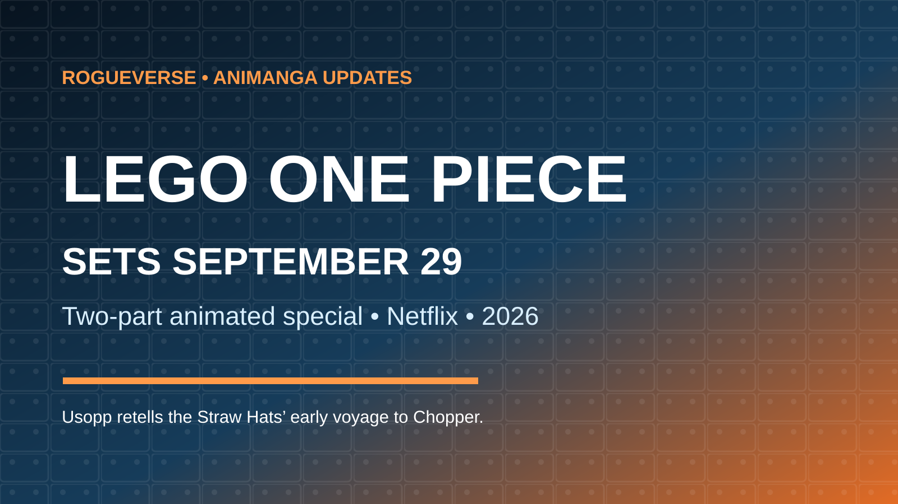

ANIME / ONE PIECE NEWS • AUGUST 20, 2026
LEGO One Piece Sets September 29 Netflix Premiere
Usopp is about to retell the Straw Hats' early voyage the only way Usopp reasonably could: with himself positioned suspiciously close to the center of every heroic event.

LEGO ONE PIECE will premiere globally on Netflix on September 29, 2026, giving the Straw Hat crew a two-part animated detour through a brick-built version of the adventures that shaped the live-action series' first two seasons.
Netflix describes the special as a retelling of the crew's journey from the East Blue into the Grand Line, framed through Usopp telling the story to Tony Tony Chopper. That framing is more than a cute excuse to turn the world into LEGO. It gives the project permission to exaggerate, compress and joke about familiar events through the franchise's most enthusiastically unreliable storyteller.
A Two-Part Retelling, Not a New Canon Arc
The special is best understood as a playful reinterpretation of material viewers already know rather than a new manga or anime storyline. Netflix's official listing says Usopp recounts the Straw Hats' journey across the East Blue and into the Grand Line before Chopper joined the crew.
That distinction matters. With One Piece now spread across Eiichiro Oda's manga, Toei Animation's long-running anime, Netflix's live-action adaptation and the developing THE ONE PIECE remake, another screen project could easily create title-card vertigo. LEGO ONE PIECE has a much simpler job: revisit the live-action story with a different visual language and a comic narrator who considers accuracy more of a loose suggestion.
The Live-Action Cast Returns in Voice Form
Netflix's current listing includes Iñaki Godoy, Emily Rudd, Mackenyu, Jacob Romero Gibson and Taz Skylar among the cast, with the July teaser rollout also confirming additional returning performers from the live-action production. That gives the special a useful connective tissue. These are not merely LEGO versions of generic Straw Hats; the project is explicitly tied to Netflix's branch of the franchise.
The result is a curious adaptation loop: manga becomes anime, manga becomes live action, and now that live action is being retold as LEGO animation. One Piece has officially become the kind of franchise where the adaptation family tree needs its own Log Pose.
Atomic Cartoons Is Handling the Animation
The project is produced through a collaboration involving Netflix, The LEGO Group, Shueisha and Atomic Cartoons. Netflix's April announcement described it as its first LEGO ONE PIECE animated special and confirmed the September 29 date months before the newer visual and teaser campaign pushed the project back into the spotlight.
Atomic Cartoons is a natural fit for a production that needs to balance recognizable character acting with the physical comedy and deliberately toy-like movement associated with LEGO animation. The goal is not to make the Straw Hats look like the television anime. It is to translate their personalities into a world where swords, ships, food, explosions and very questionable Usopp testimony are all built from bricks.
Why Usopp and Chopper Are the Right Framing Device
Usopp retelling the story to Chopper gives the writers a built-in reason for visual exaggeration. Chopper joins the crew after many of the East Blue adventures, meaning there is material he did not personally witness. Usopp, meanwhile, has never encountered a factual account he could not improve with a little heroic inflation.
That creates an elegant comic engine. Familiar scenes can be recreated faithfully enough to trigger recognition, then bent through Usopp's perspective. Other Straw Hats can interrupt him. Chopper can believe something absurd. A terrifying villain can become a punchline for three seconds before the story snaps back into adventure mode.
It also makes the special unusually accessible. Newer viewers can get a compressed tour through early One Piece events, while longtime fans get to enjoy the differences between what happened and what Captain Usopp the Brave would prefer history to remember.
A Surprisingly Busy One Piece Screen Era
LEGO ONE PIECE arrives during a period when the franchise is operating across several major formats at once. Netflix is continuing its live-action adaptation, THE ONE PIECE remains positioned as a new animated interpretation of the beginning of the saga, and the original anime continues its own enormous run.
The LEGO special does not need to compete with those projects on scale. Its advantage is precisely that it can be lighter, shorter and stranger. A two-part event can function as a gateway for families and casual viewers without asking them to immediately confront more than a thousand episodes of anime history.
RogueVerse Take
The most interesting part of LEGO ONE PIECE is not simply seeing Luffy rendered as a minifigure. It is the choice to make the adaptation itself part of the joke.
Usopp is already a storyteller inside One Piece. Handing him control of a retelling lets the special play with memory, ego and exaggeration while still celebrating the adventures underneath. If the writing understands that opportunity, this can be more than a branded novelty. It can become a compact comedy about how legends grow every time somebody tells them.
LEGO ONE PIECE premieres September 29, 2026, exclusively on Netflix.
Sources
Primary confirmation: Netflix, “ONE PIECE Expansion With New Original Titles and Extensions,” April 7, 2026; Netflix official LEGO ONE PIECE listing and July teaser materials. Additional reporting: Crunchyroll News, July 20, 2026.
Editorial / Rights Notice: ONE PIECE and associated characters are properties of Eiichiro Oda, Shueisha and their respective rights holders. LEGO is a trademark of The LEGO Group. Netflix materials are third-party editorial sources. RogueVerse Media does not claim ownership of these properties. This RogueVerse header is an original text-based editorial graphic and does not reproduce franchise character likenesses.